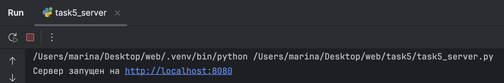
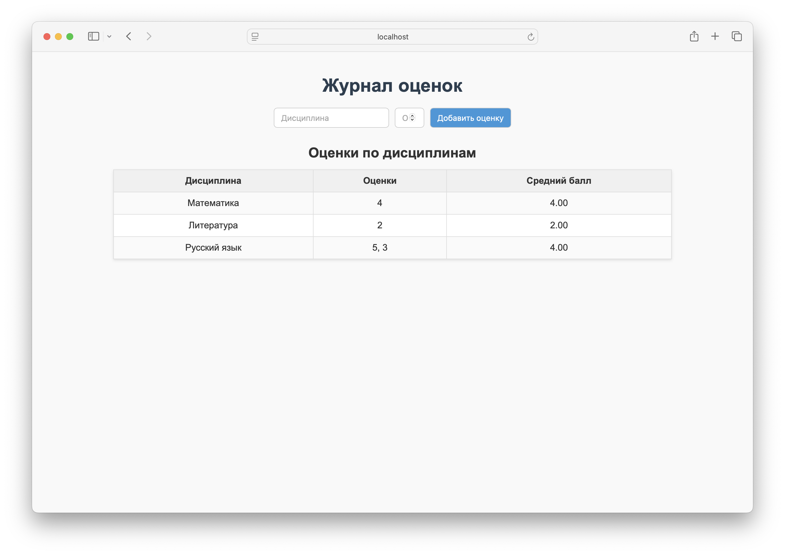

Задание 5
Условие
Написать простой веб-сервер для обработки GET и POST HTTP-запросов с помощью библиотеки socket в Python.
Сервер должен:
- Принимать и записывать информацию о дисциплине и оценке по дисциплине.
- Отдавать информацию обо всех оценках по дисциплинам в виде HTML-страницы.
Требования:
- Использовать библиотеку socket.
- Сервер должен корректно обрабатывать GET и POST-запросы и формировать HTTP-ответы.
Пояснения
- HTTP (HyperText Transfer Protocol) — протокол передачи данных для веб-страниц.
- Сокет (socket) — программная точка подключения к сети, через которую сервер и клиент обмениваются данными.
- Метод GET используется для запроса страницы с информацией (в нашем случае — журнал оценок).
- Метод POST используется для отправки данных формы (название дисциплины и оценка).
- Сервер хранит оценки в словаре
grades, формирует HTML-страницу с таблицей и возвращает её клиенту.
Реализация
Сервер
import socket
from urllib.parse import parse_qs
class MyHTTPServer:
def __init__(self, host, port, server_name):
# Параметры сервера: хост, порт и отображаемое имя
self.host = host
self.port = port
self.server_name = server_name
# Словарь для хранения оценок в формате: {"дисциплина": [оценка1, оценка2, ...]}
self.grades = {}
def serve_forever(self):
"""Запускает сервер и обрабатывает клиентов"""
# Создаем TCP сокет для IPv4
server_socket = socket.socket(socket.AF_INET, socket.SOCK_STREAM)
# Привязываем сокет к указанному адресу и порту
server_socket.bind((self.host, self.port))
# Начинаем слушать входящие соединения (максимум 5 в очереди)
server_socket.listen(5)
print(f"Сервер запущен на http://{self.host}:{self.port}")
try:
while True:
# accept() ждет новое подключение, возвращает сокет клиента и его адрес
client_conn, client_addr = server_socket.accept()
# Обрабатываем запрос от клиента
self.serve_client(client_conn)
except KeyboardInterrupt:
# Обработка Ctrl+C для завершения
print("\nСервер остановлен")
finally:
# Всегда закрываем сокет при завершении работы
server_socket.close()
def serve_client(self, client_conn):
"""Читает HTTP-запрос и отправляет ответ"""
try:
# Получаем данные от клиента (увеличенный буфер 8192 байта для больших заголовков)
request_data = client_conn.recv(8192).decode("utf-8")
if not request_data:
return # Пустой запрос - клиент отключился
# Парсим первую строку запроса (метод, URL, версия протокола)
method, url, version = self.parse_request(request_data)
# Парсим заголовки запроса
headers = self.parse_headers(request_data)
# Для POST запросов: читаем тело формы
body = "" # Создаем пустую строку для тела запроса
if method == "POST":
# Получаем длину тела из заголовка Content-Length
content_length = int(headers.get("Content-Length", 0))
# Находим конец заголовков (пустая строка \r\n\r\n)
# Сдвигаемся на +4 символа, чтобы пропустить сам разделитель
header_end = request_data.find("\r\n\r\n") + 4
# Извлекаем тело из уже полученных данных
body = request_data[header_end:]
# Если тело не полностью получено - дочитываем остальное
while len(body) < content_length:
body += client_conn.recv(8192).decode("utf-8")
# Обрабатываем запрос и получаем HTTP-ответ
response = self.handle_request(method, url, headers, body)
# Отправляем ответ клиенту
client_conn.send(response)
except Exception as e:
# Обработка ошибок - отправляем клиенту сообщение об ошибке
print(f"Ошибка: {e}")
error_response = "HTTP/1.1 500 Error\r\n\r\n<h1>500 Server Error</h1>"
client_conn.send(error_response.encode("utf-8"))
finally:
# Всегда закрываем соединение с клиентом
client_conn.close()
def parse_request(self, request_data):
"""Парсит первую строку запроса: метод, url и версию"""
# Первая строка запроса: "GET / HTTP/1.1"
first_line = request_data.split("\n")[0].strip()
parts = first_line.split()
if len(parts) < 3:
raise ValueError("Неверный формат запроса")
return parts[0], parts[1], parts[2] # method, url, version
def parse_headers(self, request_data):
"""Парсит заголовки HTTP-запроса в словарь"""
headers = {}
lines = request_data.split("\n")
# Пропускаем первую строку и читаем до пустой строки
for i in range(1, len(lines)):
line = lines[i].strip()
if not line: # Пустая строка - конец заголовков
break
if ":" in line:
# Разбиваем строку заголовка по первому двоеточию
key, value = line.split(":", 1)
headers[key.strip()] = value.strip()
return headers
def handle_request(self, method, url, headers, body=""):
"""Обработка GET и POST запросов"""
# GET запрос на главную страницу - показываем журнал оценок
if method == "GET" and url == "/":
return self.send_response(self.generate_html())
# POST запрос на главную страницу - добавляем новую оценку
elif method == "POST" and url == "/":
# Парсим данные формы из тела запроса
params = parse_qs(body)
discipline = params.get("discipline", [""])[0] # Название дисциплины из формы
grade_str = params.get("grade", [""])[0] # Оценка из формы
# Проверяем и добавляем оценку
if discipline and grade_str:
try:
grade = int(grade_str)
if 1 <= grade <= 5:
# setdefault: если дисциплины нет - создает пустой список, затем добавляет оценку
self.grades.setdefault(discipline, []).append(grade)
except ValueError:
pass # Игнорируем нечисловые оценки
# Показываем обновленную страницу
return self.send_response(self.generate_html())
else:
# Неизвестный метод или путь - ошибка 404
return self.send_response("<h1>404 Not Found</h1>", 404, "Not Found")
def load_html_template(self):
"""Загружает HTML-шаблон страницы из файла"""
try:
with open("index.html", "r", encoding="utf-8") as f:
return f.read()
except FileNotFoundError:
# Если файл не найден - используем резервный шаблон
return """
<html>
<body>
<h1>Журнал оценок</h1>
<form method="POST">
<input name="discipline" placeholder="Дисциплина" required>
<input name="grade" type="number" placeholder="Оценка (1-5)" min="1" max="5" required>
<button>Добавить</button>
</form>
{{grades_table}}
</body>
</html>
"""
def generate_html(self):
"""Формирует HTML-страницу с таблицей оценок"""
# Загружаем шаблон из файла
template = self.load_html_template()
# Создаем таблицу с оценками
if self.grades:
table = "<table border='1'><tr><th>Дисциплина</th><th>Оценки</th><th>Средний балл</th></tr>"
# Для каждой дисциплины создаем строку таблицы
for discipline, grades in self.grades.items():
grades_str = ", ".join(map(str, grades)) # Объединяем оценки через запятую
avg = sum(grades) / len(grades) # Вычисляем средний балл
table += f"<tr><td>{discipline}</td><td>{grades_str}</td><td>{avg:.2f}</td></tr>"
table += "</table>"
else:
table = "<p>Нет оценок</p>"
# Заменяем плейсхолдер в шаблоне на реальную таблицу
return template.replace("{{grades_table}}", table)
def send_response(self, html_content, status_code=200, reason="OK"):
"""Формирует полный HTTP-ответ (заголовки + тело)"""
# Кодируем HTML-контент в байты
response_body = html_content.encode("utf-8")
# Формируем заголовки ответа
response_headers = (
f"HTTP/1.1 {status_code} {reason}\r\n"
"Content-Type: text/html; charset=utf-8\r\n"
f"Content-Length: {len(response_body)}\r\n" # Длина содержимого
"Connection: close\r\n" # Закрыть соединение после ответа
"\r\n" # Пустая строка - конец заголовков
).encode("utf-8")
# Объединяем заголовки и тело ответа
return response_headers + response_body
if __name__ == "__main__":
# Параметры сервера
host = "localhost"
port = 8080
name = "Учебный журнал"
# Создаем и запускаем сервер
serv = MyHTTPServer(host, port, name)
try:
serv.serve_forever()
except KeyboardInterrupt:
pass # Корректное завершение по Ctrl+C
Пояснение:
-
Сервер создаёт TCP-сокет и слушает порт
8080. -
Метод
serve_forever()принимает подключения клиентов и передаёт их вserve_client(). -
serve_client()читает HTTP-запрос, определяет метод (GET или POST), URL и заголовки. -
Для POST-запросов сервер извлекает тело запроса и добавляет данные в словарь
grades. -
Метод
generate_html()формирует HTML-страницу с таблицей оценок, используя шаблон с плейсхолдером{{grades_table}}. -
end_response()формирует полный HTTP-ответ с заголовками и телом. -
Сервер корректно обрабатывает ошибки и закрывает соединение с клиентом после отправки ответа.
- Если файл index.html отсутствует, сервер использует встроенный HTML-шаблон по умолчанию.
HTML-файл (index.html)
<!DOCTYPE html>
<html lang="ru">
<head>
<meta charset="UTF-8">
<title>Журнал оценок</title>
<style>
body {
font-family: Arial, sans-serif;
background: #f9f9f9;
margin: 0;
padding: 20px;
color: #333;
}
h1 {
text-align: center;
margin-bottom: 20px;
color: #2c3e50;
}
form {
display: flex;
justify-content: center;
gap: 10px;
margin-bottom: 30px;
}
input, button {
padding: 8px 12px;
font-size: 14px;
border: 1px solid #ccc;
border-radius: 6px;
}
input:focus {
outline: none;
border-color: #3498db;
box-shadow: 0 0 4px rgba(52, 152, 219, 0.5);
}
button {
background: #3498db;
color: white;
cursor: pointer;
transition: 0.2s;
}
button:hover {
background: #2980b9;
}
h2 {
text-align: center;
margin-bottom: 15px;
}
table {
margin: 0 auto;
border-collapse: collapse;
width: 80%;
background: white;
box-shadow: 0 2px 5px rgba(0,0,0,0.1);
}
th, td {
border: 1px solid #ddd;
padding: 10px;
text-align: center;
}
th {
background: #f0f0f0;
font-weight: bold;
}
tr:nth-child(even) {
background: #fafafa;
}
</style>
</head>
<body>
<h1>Журнал оценок</h1>
<form method="POST">
<input type="text" name="discipline" placeholder="Дисциплина" required>
<input type="number" name="grade" placeholder="Оценка (1-5)" min="1" max="5" required>
<button>Добавить оценку</button>
</form>
<h2>Оценки по дисциплинам</h2>
{{grades_table}}
</body>
</html>
Скрины выполнения:
Вывод на стороне сервера

Вывод страницы
